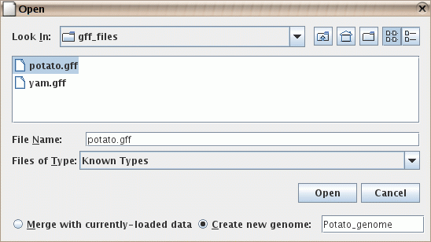

- It is now possible to parse CHP files generated by Command Console / Expression Console for the exon arrays and for the 3-prime IVT expression arrays. (As in earlier versions of IGB, parsing CHP files for tiling arrays is also supported. However parsing of CHP files for genotyping arrays or those generated from GCOS/MASS is not yet supported.)
- You can output the display to an ".eps" Encapsulated PostScript file.
This allows you to produce high-quality figures for use in publications.
These files can be printed by most laser printers, and can be viewed
with various software, some of which is free.
Figure: Print to an eps file.
- There is now a text field that displays the current visible
range of the graph. You can also quickly go to a region of interest
by typing it into this box.
Enter coordinates as "start : end", or "start + width" or "center".
Figure: The range box for viewing and going to a specific range.
- The spliced view now works on a background thread and thus doesn't slow-down your work in the main view.
- The spliced view now shows a small "x" to mark where
an exon in some transcript is not being displayed because it occurs
in the intron region of your selected transcript.
Figure: Slice view showing small "x" marks to indicate missing exons. Here it was the top transcript that was selected in the main view; it does not contain exons at the indicated points where the lower transcripts do contain exons.
- In the QuickLoad panel, you are warned before any annotation file is downloaded over the network. This helps you avoid downloading a large file when it is not convenient.
- There is now a "Select All Tiers" menu item in the label map
so that you can apply the same properties to
all selections, such as background color, or collapsed/expanded.
(Several former menu items are no longer necessary,
such as "Collapse All Tiers" and "Expand All Tiers".)
Figure: Select all tiers to change their properties.
- Preferences for QuickLoad and other data access are now available through the "File->Preferences" menu.
- Several features were added to help users who use
genomes other than the ones supported on the NetAffx Quickload
site.
- You can provide a name for the genome that is created
when you open a file in a new genome. For example, you could
load a ".gff" file with the RefSeq data for your genome.
If you later open a graph file that refers to the same genome,
the data will be merged.

Figure: Naming a genome during import. Here it is being given the name "Potato_genome".
- You can specify your own synonyms file. This is not needed
by most users, but can help when two files refer to the same
genome or chromosome, but use different names for it, such
as "chr1" vs. "Chromosome 1". Your personal synonyms file
will be merged with any synonyms files that have already been
read, such as the one on the NetAffx QuickLoad server
here, and/or your
own QuickLoad server. The format is a simple tab-delimited file.
Figure: The "data sources" preferences, including the ability to load a supplementary synonyms file.
- You can provide a name for the genome that is created
when you open a file in a new genome. For example, you could
load a ".gff" file with the RefSeq data for your genome.
If you later open a graph file that refers to the same genome,
the data will be merged.
- The autoscroll function now allows the entry of start and end coordinates. This is useful when setting-up a background display for a conference presentation.
- Graph Improvements
- Graph drawing has been improved, including a significant speed-up in drawing heat-map and bar style graphs.
- Settings and positioning of graphs are now shared across all chromosomes. For example, if you change the color or range of a graph on chromosome 2, the same graph on chromosome 3 will also have its color or range changed.
- You can now select graphs by selecting either the graph handle (as in previous versions of IGB) or by selecting the graph tier label. The graph handle is the small rectangle at the left-edge of the graph. The graph tier label is the textual label in the label map on the left-hand side of the screen. For non-floating graphs, the graph tier label is also used to drag the graph tier up or down. Floating graphs have no tier label but can be dragged up and down using the graph handle.
- By default, graph labels will now use the short filename rather than the complete path to the file. You can change this default through the preferences panel.
- Graphs for scored regions, such as expression levels from ".egr" files,
are now drawn in a region-based way which may be easier to understand.
Figure: When scored regions in an "egr" file overlap, the "bar" graph style lets you see the scores for each individual region. (When there is complex overlapping, you may prefer to use the Pivot View tab.)
- Graphs can be joined into a group.
- Use the "Join" and "Split" buttons in the "Graph Adjuster" panel.
- Grouped graphs can be moved as a unit.
- The group can be "expanded" to show each graph on a separate line, or "collapsed" to show all graphs printed on top of each other.
- The group can be given a name that differs from the names of individual graphs.
- Individual graphs in a group can be manipulated by by selecting their individual handles. The group as a whole will be selected when you select the label in the left-hand label map.
- When a graph bookmark is created, the fact that several graphs are grouped together will be remembered.
Figure: Joined graphs in expanded and collapsed states.
- When an ".egr" file contains multiple scores per region, the
scores will be shown in separate tiers, but those tiers will be
grouped together with a single label in the left-hand label map.
(You can separate these into distinct tiers, if you wish, by using
the "Split" button in the Graph Adjuster tab.) As with previous
versions of IGB, it is still not yet possible to create a bookmark of
the graphs made from an ".egr" file.
Figure: All scores from a single ".egr" file will be automatically grouped together so you can move them as a group. Here the group is named "Experiment A" and the scores are named "sample1" to "sample12". By selecting the label "Experiment A", you can adjust the graph properties, such as the min and max value, of all these graphs at once. Here the "Red/Black/Green" heatmap is used. Since the background is black, using the "Blue/Yellow" heatmap would allow you to also tell the difference between value zero (gray) and no-data (background): see here.
- You can change the background color of a graph tier. ("Floating" graph tiers still have a transparent background.)
- The Red/Green heatmap has been replaced with a more standard Red/Black/Green heatmap. This is particularly useful if you set the graph minimum and maximum such that zero is in the middle of the range.
- Since only a few of the form graph preference settings remain
necessary, the graph preferences panel has been removed. The remaining
few preferences that can be set by the user are now in the
"Other Options" panel.
Figure: Graph options in the "Other Options" panel.
{kind=link}
IGB is part of the GenoViz project. Source code for IGB is released under the Common Public License, v1.0 an OSI approved open source license. IGB uses other open source software packages which are covered by their own open source licenses.
IGB is Copyright (c) 2000-2006 Affymetrix, Inc. Research and development of IGB is supported in part by NIH grant R01HG003040